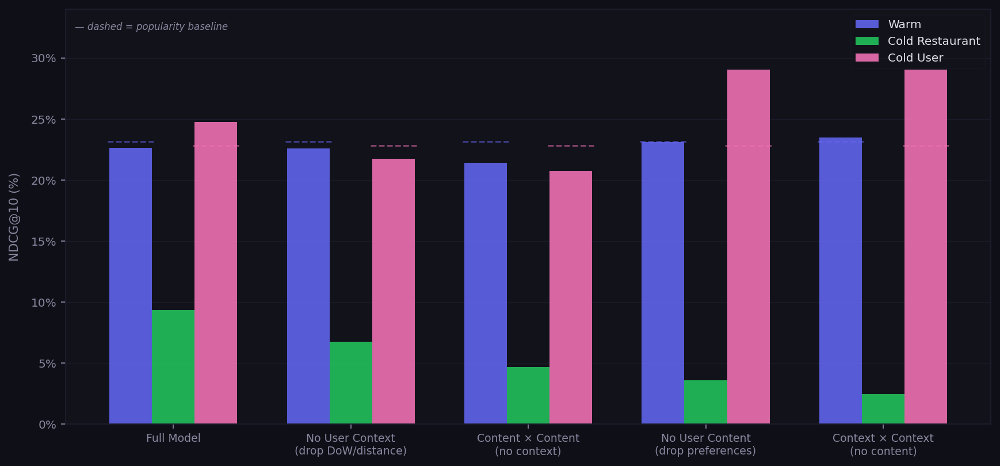
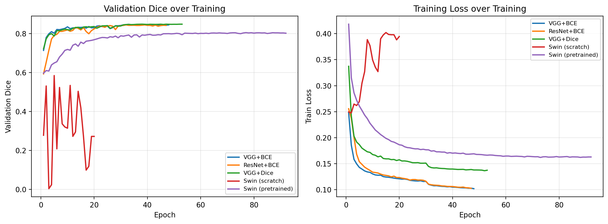

Two-Tower Recommendation with Cold Start Ablation
Research · Recommender SystemsFound that context features alone outperform the full model on cold-start users by 4.2 NDCG@10 points, while content features remain essential for cold restaurants. A 12-experiment ablation on a Two-Tower dual encoder over 1.3M Yelp reviews.
Key Findings
- Cold users: context-only model (day-of-week, distance, restaurant temporal profiles) achieves NDCG@10 of 29.0% — beats the full model's 24.8% and the popularity baseline by 27.2 pp
- Cold restaurants: content features are essential — dropping user preferences collapses NDCG@10 from 9.3% → 3.6%; popularity scores 0% by design (no training reviews)
- Asymmetric feature importance: dropping user preferences improves cold user performance (24.8% → 28.9%) but cuts cold restaurant performance in half — sparse preference estimates are noisier than situational context
- Checkin-matched visit times (UTC → local via per-state IANA timezone mapping) lift warm NDCG@10 by 1.7 pp and cold user by 1.9 pp
- Gated fusion underperforms on cold restaurants: content-gated interactions learned on training restaurants don't transfer to unseen ones
Engineering Highlights
- On-device feature indexing (no DataLoader, no CPU↔GPU transfer per batch); per-epoch resampling of geographic negatives and Gumbel-max onboarding selections as free data augmentation
- Leave-one-out onboarding evaluation prevents information leakage when cold users' only signal comes from test reviews
- 4-stage data pipeline (extract → preprocess → split → feature prep) with iterative interaction-density filtering and stratified cold start holdout
- Vectorized dataset construction dropped from 47s to 8s via numpy bulk operations

Lightweight CNN Encoders for Nucleus Segmentation
Research · Healthcare MLControlled encoder ablation showing a 34M-param VGG U-Net matches MedT (a transformer purpose-built for small medical datasets) and outperforms pretrained Swin-T on nucleus segmentation in the low-data regime.
Key Findings
- VGG U-Net (Dice 0.851) matches ResNet and beats pretrained Swin-T by 4.9 Dice points on PanNuke (5K patches, 19 tissue types)
- On MoNuSeg (37 training WSIs), VGG reaches Dice 0.796 — equivalent to MedT's published number with a ~24× larger param budget but no specialized attention mechanism
- Pareto-dominant on inference cost: 2.6× less memory and 1.8× lower latency than Swin-T at equal-or-better accuracy
- Hypothesized mechanism: spatial-resolution preservation at skip connections + convolutional inductive bias outweighs Swin's pretraining advantage in low-data regime
- Implications for edge-deployed microscopy, veterinary/rare-disease research, and non-H&E staining where foundation model pretraining misaligns


Booker
Agentic AIMulti-agent system for autonomous artist–venue matching with production-grade orchestration, semantic vector search, memory management, and safety guardrails.
Key Design Decisions
- Coordinator pattern with bounded iterations prevents runaway agent loops
- MongoDB Atlas Vector Search with
all-mpnet-base-v2embeddings (768-dim) for semantic artist/venue discovery by vibe and description - 3-tier memory (conversation, working, preferences) enables context-aware multi-turn interactions
- NeMo Guardrails enforce content safety and domain boundaries at inference time
- Structured tool use with Claude API for reliable, typed agent-to-tool communication
- MCP server for Claude Desktop integration with standardized tool interop
Attention-Based Machine Translation
Deep LearningSeq2seq encoder-decoder with Bahdanau and multi-head attention for Spanish→English translation, built from scratch in PyTorch.
Architecture & Results
- Implemented Bahdanau (additive) and multi-head attention mechanisms from first principles
- Encoder: bidirectional GRU producing context vectors; Decoder: GRU with attention over encoder outputs
- Achieved 81% accuracy on Spanish→English translation benchmark
- Built attention heatmap visualizations showing learned alignment patterns
- Compared additive vs. scaled dot-product attention tradeoffs empirically
PlateMate
Startup · ML ProductAI-powered food recommendation platform using collaborative filtering, RAG-based semantic search, and vector similarity over restaurant reviews.
Technical Highlights
- Hybrid recommendation engine: item-based collaborative filtering + semantic vector search
- RAG pipeline with
all-mpnet-base-v2embeddings (768-dim) for natural language dish queries - Query parsing into semantic + structured filters with geo-aware retrieval
- User-item interaction matrix for personalized collaborative filtering scores
- CTO — leading architecture decisions, ML pipeline design, and team of engineers
Cancer Cell Classification
Machine LearningMulti-method classification pipeline for identifying cancer cells in gene expression data, comparing PCA, SVM, Random Forest, and neural approaches.
Approach
- Dimensionality reduction via PCA on high-dimensional gene expression features
- Compared SVM, Random Forest, and logistic regression on cancer/non-cancer classification
- Evaluated precision-recall tradeoffs critical for medical classification tasks
- Completed for Matrix Methods in Machine Learning & Data Analysis